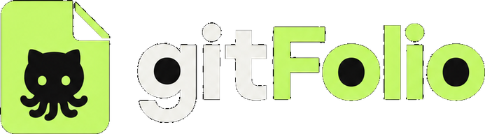
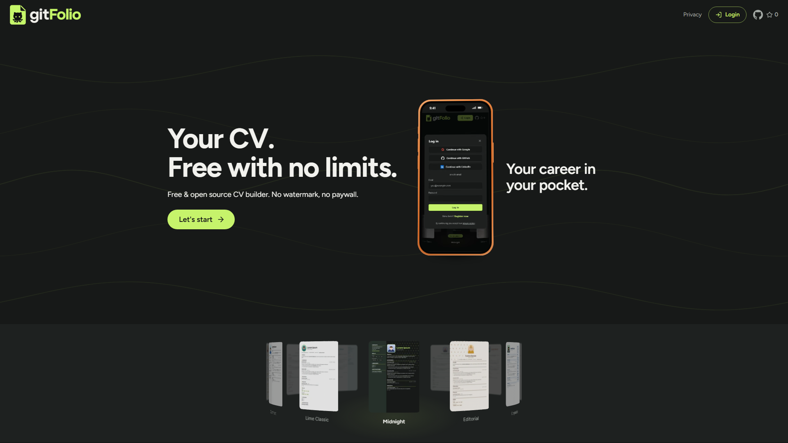
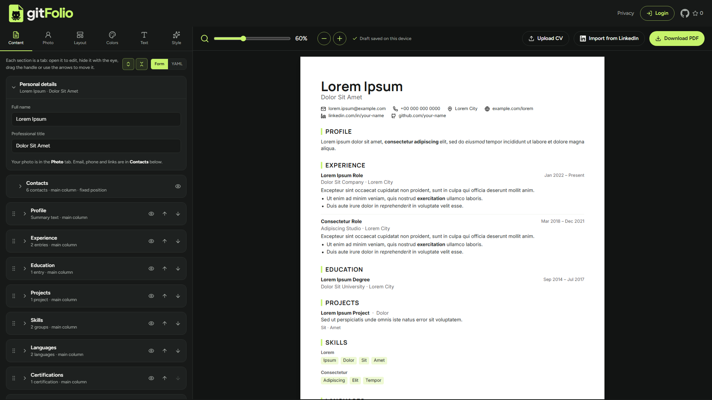
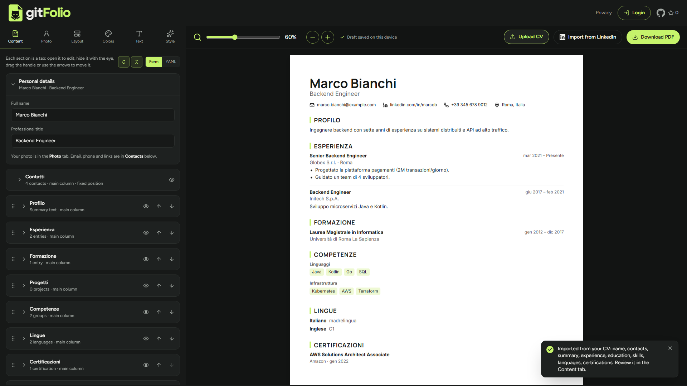
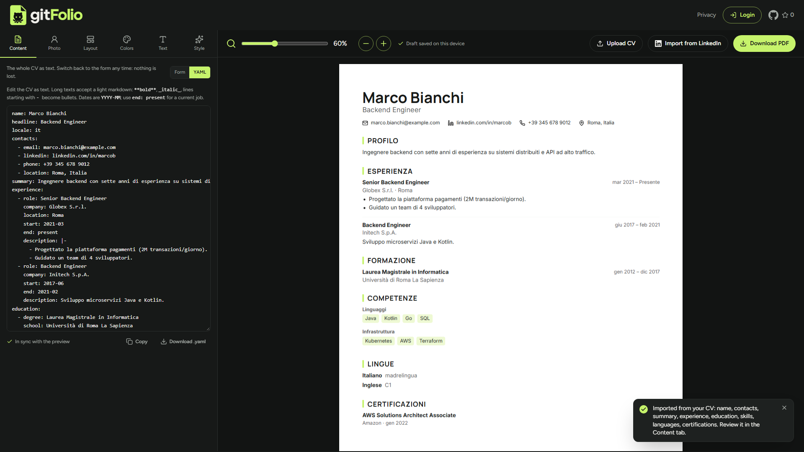
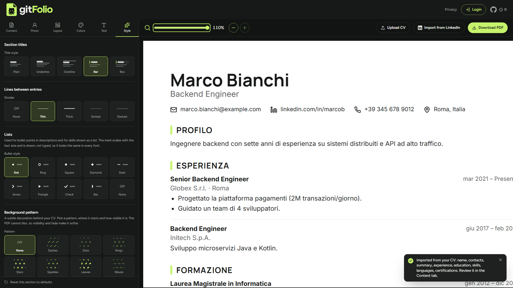

Your CV.
Free with
no limits.



Start from the CV you
already have.

Or write it
as YAML.
12 templates.
Free with no limits.

No watermark,
no paywall.
Let's start
michelesanfilippo.github.io/gitFolio